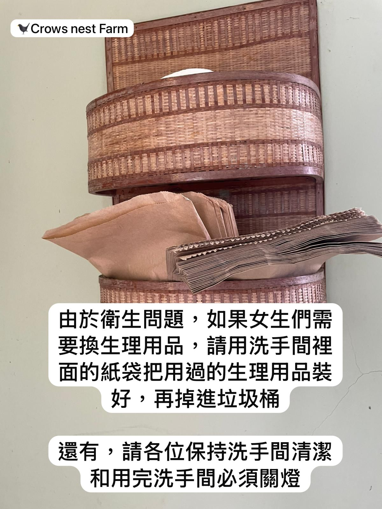
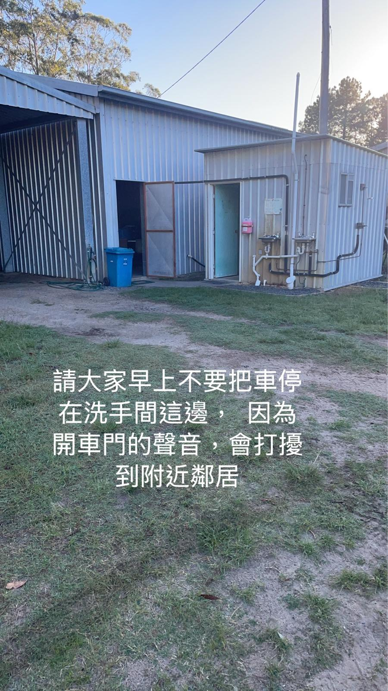
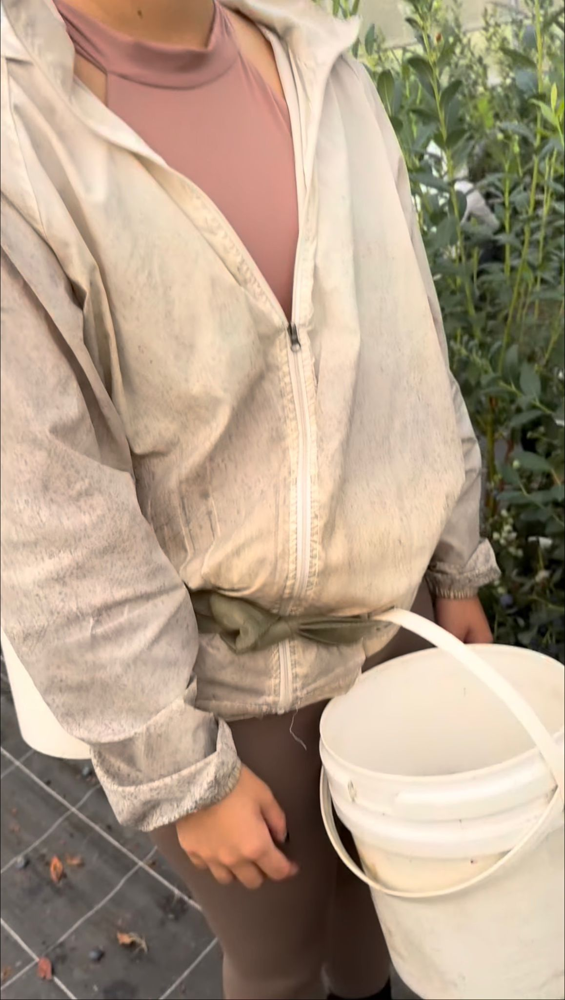
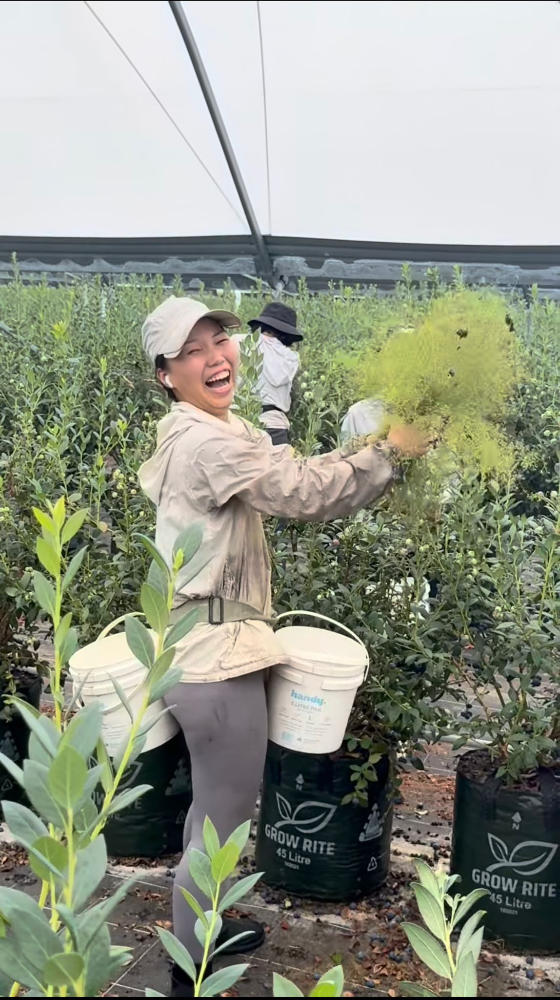
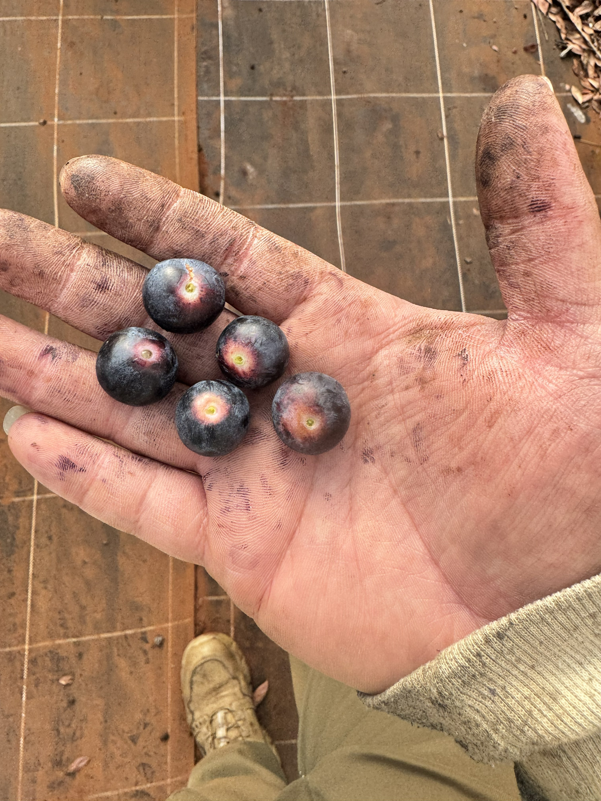
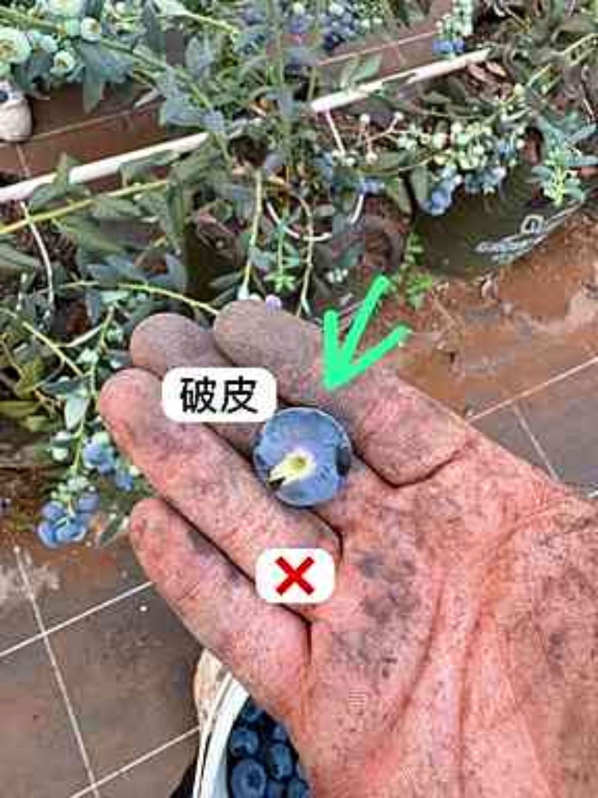
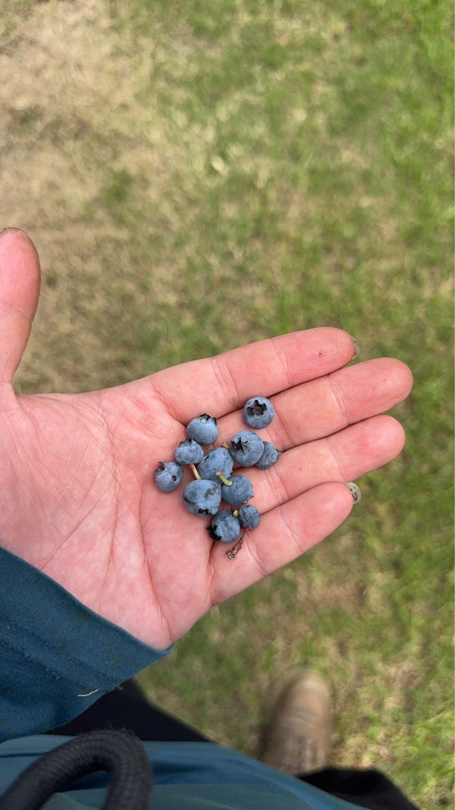
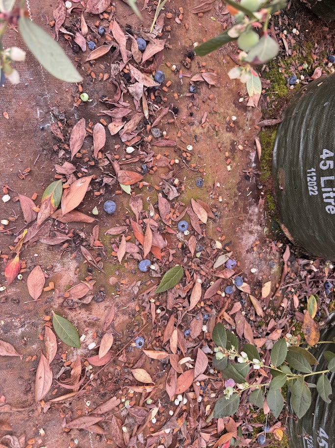
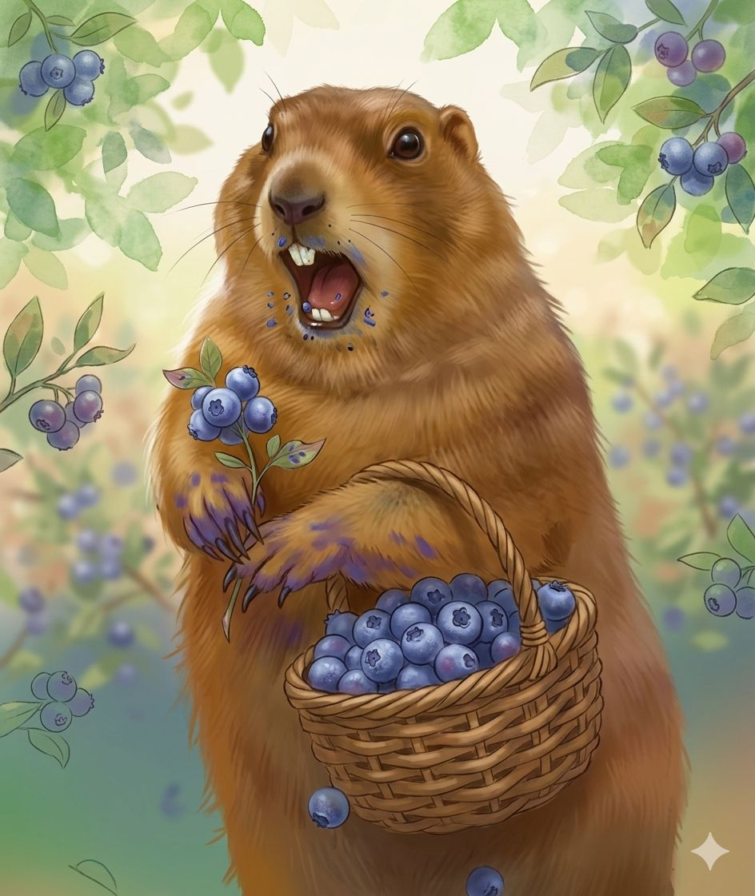
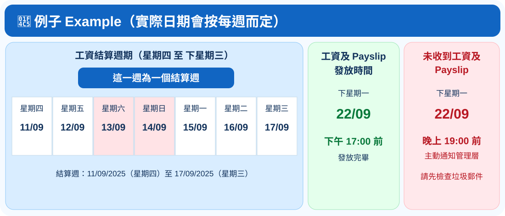

工作守則工作守则Work rules就業ルール근무 수칙
採果品質采果质量Picking quality収穫品質수확 품질
全藍、果皮完整，沒有花或樹枝。全蓝、果皮完整，没有花或树枝。Only fully blue berries with intact skins and no flowers or twigs.全体が青く、皮に傷がなく、花や小枝が付いていない実を選びます。완전히 파랗고 껍질이 멀쩡하며 꽃이나 잔가지가 없는 열매만 담으세요.
紅果、綠果及破皮果。軟爛、爆汁或蟲咬的也不要放入桶。红果、绿果及破皮果。软烂、爆汁或虫咬的也不要放入桶。Leave out red, green, split, mushy, leaking or insect-damaged berries.赤い実、緑の実、皮が裂けた実、柔らかく傷んだ実、果汁が漏れた実、虫食いの実は除きます。빨갛거나 초록색인 열매, 터졌거나 물러졌거나 즙이 새거나 벌레 먹은 열매는 빼세요.

🚫 違規即時離場守則（請嚴格遵守）
- 禁止坐桶：大家不要坐桶子（農場的桶子只是用來採果,不是拿來坐!）。
- 吸煙限制：嚴禁在場內吸煙（包括電子煙）。如需吸煙，請務必移步至場外指定區域。
- 交果洗手：每次交果完畢後，請務必清洗雙手。
- 場內禁食：場內禁止帶入食物及進食，(如帶了食物,請放在場外門口外)且只允許飲用純水（禁止含糖飲料）。
- 休息進食規範：大家在休息時間如需進食，請至場外用餐。重新開始採果前，請務必洗手。
- 嚴禁隨地小便：請絕對不要在場內的草地上隨地大小二便。
- 耳機配戴限制：如需配戴耳機，請只戴一邊，以確保能聽到現場廣播或其他聲音（例如：叫大家交桶子）。
- 手套規格：嚴禁配戴不符合農場規格的手套（例如：不能使用完全覆蓋手指的手套，必須完全露出所有手指）。
- 禁止戴太陽眼鏡：工作期間不能戴太陽眼鏡，以確保採收品質與眼睛能辨別顏色。
- 嚴禁損害農場利益：嚴禁做出任何對農場造成風險損失的事情。例如：偷竊（包括藍莓及其他不屬於你的私人財產）、私自關掉農場水系統、破壞農場設備等。
🧺 農場採果規則
- 不要選擇行數，請按順序行數去採果。
- 請 2 人為一組去採果，若只有 1 人，請變為 3 人一組（如有變更，會跟大家說）。
- 在所有行數尚未完成之前，請不要偷採別人的行數的藍莓！
- 若自己的那一行數（包括隊友）已完成，請前往（同一區）的新行數去採果。
- 若所有行數都已經有人正在採摘，你將會聽到「Help another」，才去幫其他人的行數去採果。
- 請聽從任何指示，包括採摘的行數及交桶。
- 若有很多人需要洗手時，請禮貌排隊，不要插隊。
‼️ 請各位保持和平，如有投訴，請跟管理層說，不要自行處理。
⚠️ 包裝注意事項
- 在開工前（5分鐘）開始做準備工作。
- 包裝前，請記得必須要用酒精搓手液。
- 要戴包裝帽子（包好所有露出的頭髮）。
- 長頭髮的，必須綁起來。
- 手上（不能）戴任何飾物，包括手錶。
- 水瓶要放在休息室。
- 請專心工作，不要聊天，不能戴耳機及不要用手機‼️
- 如藍莓掉在地上，請馬上撿起來掉在垃圾桶。
- 做完包裝，需立即做清潔（包括清洗機器及掃地）。
📋 其他注意事項
- 洗手間衛生問題：如果女生們需要更換生理用品，請用洗手間裡面的紙袋把用過的生理用品裝好，再掉進垃圾桶。
- 節能與整潔：請各位保持洗手間清潔，和用完洗手間必須關燈。
- 早上停車規範：請大家早上不要把車停在洗手方這邊，因為開車門的聲音，會打擾到附近鄰居。


🍇 採果技巧與好壞果圖鑑








壞果/爛果定義：已經軟化，爆汁，蟲咬的果才可掉在地上。
（如經發現，會被警告，嚴重的人員會被停工及開除！）


🚜 常規農場工作守則
- 請絕對聽從管理人員的合理指示。
- 工作時間內需保持積極、認編的工作態度。
- 請準時到達規定的農場（採果區域）集合，切勿遲到。
- 成績與品質要求：所有人的採收成績與品質均需盡量做到最好。成績欠佳或工作態度欠佳者，將面臨被停工及請離開的風險。
💰 工資和 Payslip 注意事項
- 工資結算週期：星期四 至 下星期三 為一週。
- 工資及Payslip的發放時間：將於（結算週）的下週一,下午 17:00 前發放完畢。
- 未收到工資及Payslip(星期一,17:00後)：如未收到工資和 payslip(先在垃圾郵件查核一下!!!再三告知先查核一下)，請務必於（當天）週一晚上 19:00 分前主動告知管理層。

📅 工資日期計算機
選擇其中一日返工日期，計算所屬結算週及發薪日期。
計算方式：由所選日期回推至星期四，結算至下一個星期三，並於結算週後的星期一發薪。
📝 工資／Payslip 未收到申報表
星期一 17:00 後仍未收到？請先檢查垃圾郵件，並於當天 19:00 前通知管理層。
以下三項可選一，亦可全選 *
只會複製內容，請自行發訊息予管理層；此表格不會上傳或儲存個人資料。毋須提供 TFN 或銀行帳號。
⚠️ 請假注意事項
- ⏰ 事假請最少提前 72 小時（3日）通知：如屬可預先安排的長假，應更早提出，以便安排工作及人手。不可抗力等事宜，如突發家庭事故等，可例外處理，但須在可行情況下盡快通知管理層，說明原因、請假日期及預計返工日期。如情況有變，請及時更新。
- 🤒 病假／突發情況請盡快通知：如因生病或突發情況無法上班，請在知道自己無法上班後盡快通知工頭，不要等到上班時間過後才通知。
- 📅 請清楚提供請假日期：如連續請假多日，請寫清楚開始日期、結束日期及預計返工日期。
- ❌ 請不要只發「今日唔返」：請使用下方表格提供姓名、日期、請假類型及原因，方便工頭記錄及安排人手。
- 🔄 如需延長請假，請再次通知：如未能按照原定日期返工，請盡快通知工頭新的預計返工日期。
- ⚠️ 未通知而缺勤：如沒有按照程序通知而沒有上班，將記錄為「未通知缺勤」，並由管理人員跟進。
- 📩 提交資料後請留意回覆：如工頭需要確認日期或其他資料，請配合回覆，以便完成記錄及安排。
📝 請假及離職通知表格
填寫後複製內容，自行發送給管理層。
📝 員工請假申請表
事假最少提前 72 小時通知。病假或突發情況，請盡快通知。事假最少提前 72 小时通知。病假或突发情况，请尽快通知。Give at least 72 hours’ notice for personal leave. Report sick leave or emergencies as soon as possible.私用休暇は72時間前までに、病気や緊急時はできるだけ早く連絡してください。개인 휴가는 최소 72시간 전에, 병가나 긴급 상황은 가능한 한 빨리 알려 주세요. 查看請假守則查看请假规则View leave rules休暇ルールを見る휴가 수칙 보기
中文或英文姓名填其中一項即可，別名必填。
請盡早通知管理層；病假或突發情況請盡快通知。通知不代表已獲批准。
📋 員工離職通知表
英文全名或別名填一項。兩項都有填，就必須對到同一位員工。
為方便安排人手，請盡量提前兩星期（14日）通知管理層。實際通知要求以適用合約及法律為準。
按「複製離職通知」會同時將通知私下送交管理員審核。
已提交的表格只供授權管理員審核。
📍 農場導航與介紹影片 (Farm Directory)
農場留言區农场留言区Farm message wall農場掲示板농장 게시판
填個名字，就可以寫感想、畀建議或分享一張農場相片。留言會即時公開。填个名字，就可以写感想、提建议或分享一张农场照片。留言会立即公开。Use your name to share feedback, a suggestion or a farm photo. Posts are public as soon as you publish them.名前を入力して感想や提案、農場の写真を投稿できます。投稿はすぐに公開されます。이름을 적고 소감, 제안 또는 농장 사진을 공유하세요. 글은 게시 즉시 공개됩니다.
最新留言最新留言Latest posts最新の投稿최신 게시물
💬 Signal 活動交流群
歡迎大家自願加入！可以在群組內尋找隊友一起出去玩、交流生活趣事、分享資訊、聊聊天，認識新朋友。
此群組屬自由交流性質，並非農場工作通知群組。請互相尊重，友善交流。
📱 使用 Signal 掃描下方 QR Code 即可加入。